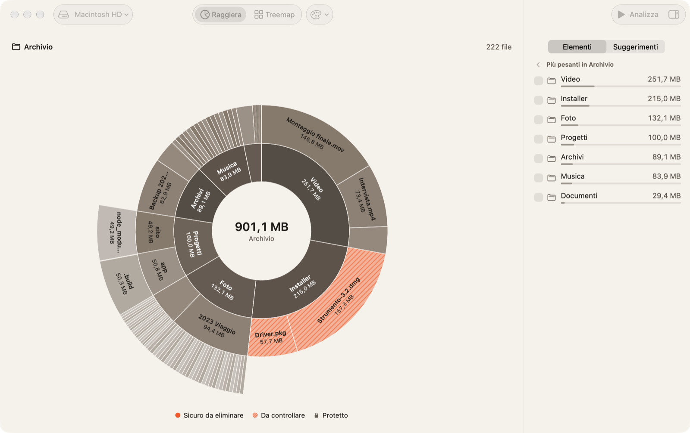

MacSpace
Scopri dove va lo spazio del tuo Mac e recuperalo in sicurezza.
Scarica MacSpace
Vedi dove va lo spazio
Una raggiera o una «Treemap» del disco intero o di una cartella. Entra nel dettaglio con un clic, risali con ⌘↑.
Sai cosa puoi togliere
Ogni elemento ha un livello: sicuro da eliminare, da controllare, protetto. Lo dice con un colore e con una parola, mai solo con il colore.
Niente sparisce da solo
MacSpace non cancella nulla: sposta nel Cestino quello che scegli, dopo una conferma. Finché non svuoti il Cestino, puoi ripristinarlo dal Finder.
Installazione
- Scarica
MacSpace.zip, aprilo e sposta MacSpace in Applicazioni. - Aprilo. macOS lo blocca, perché l'app non è autenticata da Apple: scegli «Fine», non «Sposta nel Cestino».
- Apri Impostazioni di Sistema › Privacy e sicurezza, scorri fino a Sicurezza e scegli «Apri comunque» accanto a MacSpace (il pulsante resta lì per poco dopo il tentativo). Conferma con la password o Touch ID, poi scegli di nuovo «Apri comunque».
- Dai a MacSpace l'accesso completo al disco (Impostazioni di Sistema › Privacy e sicurezza › Accesso completo al disco) per vedere anche le cartelle protette. Puoi analizzare anche senza: quelle cartelle saranno segnate come non leggibili.
Serve macOS 27. Ogni nuova versione si installa allo stesso modo: macOS la considera un'app nuova, quindi chiede di nuovo «Apri comunque» e l'accesso completo al disco.